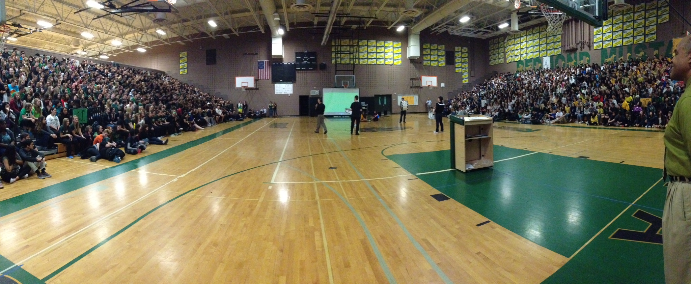

Go Mustangs!
Leadership in student government is a lifelong memory. I served as junior class vice president, and then ASB President during my 11th and 12th grade years at Redmond High School. Being involved in student government was my main activity from high school. The leadership class was a second family to me, alway there for support, and full of energetic students with ambitious ideas.
During my time as ASB President, I embraced the responsibilies of helping to structure and run the class, collaborate with staff, administration and the Redmond community to put on events, and represent the student body in a professional yet approachable manner. The executive board which consisted of six students met with the principal Mrs. Todd every month to discuss potential ideas, and what we hoped to implement or see change at the school. We also worked closely with Mr. Larson, our administrative advisor.
Kia duNann was our teacher, and a mentor and friend that I will have for life. She taught me what it really means to selflessly serve others, and was always there by to support the class. On a more personal level, she was there to go through with me the stresses that I faced, and always stood by my side. I am grateful for the opportunity to have been able to work with her, and to still keep in touch with as a lifelong mentor.
Besides the typical assemblies, pep rallies, homecoming and tolo dances, this year we were able to incorporate some new unique events. One of the events was the Color Run for Heart, which in collaboration with the American Heart Association our school was able to organize and run a 5k around Redmond Town Center. The Water Project was a unique fundraiser we started which raised $$$$$$. We organized a "Lip-dub" which is like a music video, set to the song of "Hey Ya" by Outkast. Additionally, it was the 50th anniversary of Redmond High School, so the class put on a unique assembly in recognition of the school. It was a great experience to carry on some of the historic traditions of Redmond, while also implementing some of our own.
